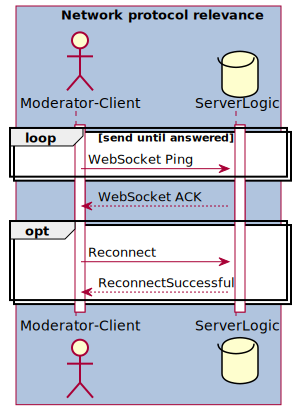
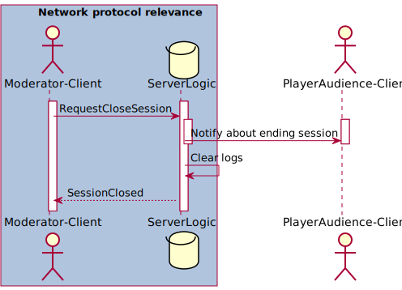

Network protocol
General information
The "WebSocket" class provided by C# is used for communication between the Moderator-Client and the ServerLogic. When starting an Online-Session, the moderator is asked for a URL and password. The URL leads to the game ServerLogic and is then used to establish a WebSocket connection with the ServerLogic. Once the connection is established, the Moderator-Client sends a RequestOpenSessionMessage to the ServerLogic, which contains the Moderator-Client's GUID and the entered password. If this password is incorrect or if the Moderator-Client takes too long to send the RequestOpenSessionMessage, the WebSocket connection is automatically terminated. If not, a Online-Session is opened, and the PlayerAudience can join. The messages sent back and forth between Moderator-Client and ServerLogic are all in JSON format. The security and persistence of communication is guaranteed by the use of WebSockets in combination with the HTTPS protocol. In addition, for communication integral data is stored on the ServerLogic in hashed form. This includes the ServerLogic password and the moderator's GUID.
ServerLogic logs
The ServerLogic log stores the Moderator-Client's GUID, the PlayerAudience-Client GUIDs, the voting results, and the sessionKey. If the ServerLogic should at any time lose the connection to the internet or have to close the current Online-Session, this will provide the following advantages:
- The logged Moderator-Client's GUID can still be used to send a ReconnectMessage to the ServerLogic without requiring the password to be re-entered. This allows the Online-Session to resume easily without having to change sessionKey or re-entering the password.
- The logged PlayerAudience-Client GUIDs can be used for keeping track of the PlayerAudience-Clients connected to the ServerLogic.
- The logged sessionKey allows the PlayerAudience-Clients to quickly and easily reconnect to the Online-Session without having to enter a new sessionKey.
- The logged voting results realize postgame statistics.
Differences between starting in Online-Mode and Offline-Mode
When starting the application, the game offers the possibility to start the game either in Online-Mode with a server, or in Offline-Mode. Attention must be paid to a few important points here:
- If you start the game as an Online-Session, you can switch between Online-Mode and Offline-Mode at any given time.
- If you start the game in Offline-Mode, the game remains in Offline-Mode until the moderator starts an Online-Session via the main menu. This decision was made because one wants to avoid that the moderator has to enter the URL to the ServerLogic and the password during the game.
- For network protocol purposes, a flag is set to distinguish whether the game was initialized in Online-Mode or Offline-Mode, so that sending and receiving messages is disregarded right from the start of the game.
Behaviour in the event of connection loss
A clear distinction must be made between three different cases. First of all, we refer here to the view of a single, specific PlayerAudience-Client, which can lose the connection to the ServerLogic, but this behaviour is not exclusive to single PlayerAudience-Client and can also happen to multiple PlayerAudience-Clients, but due to the same reasons listed below. Secondly, the ServerLogic can also lose the connection to all clients - in other words, a complete loss of connection to the ServerLogic. Finally, it is possible for only the Moderator-Client to lose its connection to the ServerLogic, while all other clients can maintain their connection to the ServerLogic. Since this can have very different effects, the following section specifies how, these cases may occur and which actors have to do what in order to deal correctly with the loss of connection.
Moderator-Client connection loss
A selection of possible causes for the loss of connection from the Moderator-Client to the ServerLogic are the following:
- The moderator closes the client, and thus the connection to the ServerLogic.
- The moderator's end device loses the connection to the network, and thus to the ServerLogic.
- The ServerLogic does not react within 5 seconds after receiving the Moderator-Client's message.
If the Moderator-Client should at any time lose the connection to the ServerLogic, it automatically switches to Offline-Mode and notifies the moderator. The moderator can then continue to play the game in form of an Offline-Session. In the meantime, the Moderator-Client continuously sends RequestServerStatusMessages to the ServerLogic to determine if the ServerLogic is back online. When the Moderator-Client receives a ServerStatusMessage, it informs the moderator that the Online-Session can be resumed. In this case, the moderator can either go back into Online-Mode via an UI element or continue playing in Offline-Mode. This can result in the following three scenarios:
- The ServerLogic is reachable again and the connection can be re-established. Furthermore, the Online-Session on the ServerLogic was not closed and the PlayerAudience-Clients are still connected to the ServerLogic. In that case the Moderator-Client only has to send a ReconnectMessage to return to normal gameplay, since the Online-Session is still going.
- The ServerLogic is reachable again and the connection can be re-established, but the Online-Session on the ServerLogic has been closed and the PlayerAudience-Clients are no longer connected to the ServerLogic. In that case the Moderator-Client only has to send a ReconnectMessage, since the logs of the ServerLogic still hold the GUID of the Moderator-Client. This way the Online-Session can be restored without entering the password again and the PlayerAudience-Clients can simply reconnect to the ServerLogic, through the same QR-code, URL and sessionKey, to be able to participate in the game again.
- The Moderator-Client still cannot reach the ServerLogic and the game continues in Offline-Mode.
If the moderator ever returns to the main menu, the Online-Session must be started anew by connecting to the ServerLogic via password again.
PlayerAudience-Client connection loss
A selection of possible causes for the loss of connection from the PlayerAudience-Client to the ServerLogic are the following:
- The audience member closes the website, and thus the connection to the ServerLogic.
- The audience member's end device loses the connection to the network, and thus to the ServerLogic.
- The ServerLogic goes offline or loses its connection to the Internet.
Since no data of the audience member has to be saved and it has absolutely no relevance for the course of the game whether the spectator has been part of the Online-Session before or not, he can connect to the ServerLogic again at any time and does not have to suffer any disadvantages compared to the other PlayerAudience-Clients. Even audience members who were not connected to the ServerLogic at all before the start of the Online-Session can join in this way without any problems.
ServerLogic connection loss
A selection of possible causes for the loss of connection from the ServerLogic to all clients are the following:
- The network carrying the ServerLogic breaks down.
- The physical server on which the ServerLogic resides is not reachable (either because of internet problems or because the server crashed).
- The logic of the game ServerLogic has crashed.
Although all these issues boil down to the same result - the inaccessibility of the ServerLogic - in the first case, one can hope that the network the ServerLogic is located on will recover in the course of the game. Though, in the second and third case, nothing can be done for the time being and the game must be played offline by the moderator. However, it should then be checked whether and how the logic of the game ServerLogic was related to the problem and how this problem can be avoided or fixed in the future.
What happens if a Moderator-Client wants to connect to the ServerLogic when a Moderator-Client is already connected to the ServerLogic?
If the new Moderator-Client has entered the required password correctly, the old Moderator-Client is disconnected from the ServerLogic and a new Online-Session is started. This has the following reasons:
- Since the password is only known to the ServerLogic owners, the moderator cannot be thrown out by a random person.
- The moderator can start a new Online-Session at any time and does not have to worry about if there is still an Online-Session going on somewhere.
- In the event that the ServerLogic mistakenly thinks that an Online-Session is already in progress, the ServerLogic will not be blocked and can continue to be used without problems.
What happens in case of an illegal message being recieved?
Moderator-Client and ServerLogic should never send illegal messages, as this is a sign of a damaged architecture or insufficient network protocol. Should this marginal case occur nevertheless, the connection between Moderator-Client and ServerLogic should be cut and the illegal message ignored. The game is then continued in Offline-Mode, unless the moderator chooses to go back into Online-Mode and reconnect to the ServerLogic.
What happens in case of a pause?
Breaks are always initiated by the Moderator-Client and cannot be initiated by the ServerLogic under any circumstances. If the Moderator-Client initiates a pause, the following events will occur:
- The game on the Moderator-Client is paused completely and a pause screen appears.
- Despite the pause, the ServerLogic continues to communicate with the Moderator-Client and the PlayerAudience-Clients.
- If a vote is in progress, the ServerLogic will pause the voting timer.
What about the communication between PlayerAudience-Clients and ServerLogic?
Communication between the ServerLogic and the PlayerAudience-Clients is not specified as part of the network protocol because the back-end of the PlayerAudience-Clients and the general ServerLogic logic are on the same physical server and can thus communicate directly with each other. This communication happens locally, through different functions, and does not need pre-defined message types, like the communication between Moderator-Client and ServerLogic. Since the front-end of the PlayerAudience-Clients is a web page, nothing more specific needs to be defined here either, as pre-implemented solutions of HTML and JavaScript can be used to implement the communication between PlayerAudience-Clients and ServerLogic. Apart from that, the Observer-pattern is used to make the communication simple and efficient. Here the PlayerAudience-Clients subscribe to the ServerLogic to observe it.
MessageContainer
Defines the container format for a message. All following fields can be found in every network message, whereas a debugMessage is purely optional.
class MessageContainer
{
Guid ModeratorId;
MessageType Type;
DateTime CreationDate;
string DebugMessage;
}
- moderatorId: The individual identifier assigned to the Moderator-Client. Only the Moderator-Client sends this id to the ServerLogic to identify itself. The ServerLogic leaves this field empty.
- type: Specifies the type of the message to be able to parse it accordingly.
- creationDate: The timestamp of the message.
- debugMessage: Can be used during development to transport additional data between ServerLogic and Moderator-Client. This way, in case of a non parsable message, or an error occurring, information can be carried to the Moderator-Client directly for quick access, without the need to search through the logs.
MessageType Enum
Lists all message types. The structuring by comments is only for overview and has no semantic meaning whatsoever. All messages are identified by the MessageContainer.
enum MessageType
{
// Initialization
RequestOpenSession,
SessionOpened,
AudienceStatus,
RequestServerStatus,
ServerStatus,
Reconnect,
ReconnectSuccessful,
RequestGameStart,
GameStarted,
// Voting
RequestStartVoting,
VotingStarted,
VotingEnded,
// Control messages
Error,
RequestGamePausedStatusChange,
GamePausedStatus,
// Postgame
RequestCloseSession,
SessionClosed
}
Who can send which MessageType?
Listing which participant may send which message, the order of the listing is based on the MessageType.
| Who can send which MessageType? | |||||||||||||||||||||||||||
|---|---|---|---|---|---|---|---|---|---|---|---|---|---|---|---|---|---|---|---|---|---|---|---|---|---|---|---|
|
|||||||||||||||||||||||||||
| Initialization | |||||||||||||||||||||||||||
|
|||||||||||||||||||||||||||
| Voting | |||||||||||||||||||||||||||
|
|||||||||||||||||||||||||||
| Control messages | |||||||||||||||||||||||||||
|
|||||||||||||||||||||||||||
| Postgame | |||||||||||||||||||||||||||
|
ErrorType Enum
All possible causes for an ErrorMessage, which can occur in the context of communication between ServerLogic and Moderator-Client. These apply both when establishing the connection and during the general course of the game.
enum ErrorType
{
WrongPassword,
UnknownGuid,
IllegalPauseAction,
SessionDoesNotExist,
NewModerator,
IllegalMessage
}
- WrongPassword: Is triggered when a RequestOpenSessionMessage contains the wrong password.
- UnknownGuid: Is triggered when a message with an unknown moderatorId is sent to the ServerLogic.
- IllegalPauseAction: Is triggered if one of the following cases applies:
- A request to pause the game reaches the ServerLogic even though the game is already paused.
- A request to continue the game reaches the ServerLogic even though the game has not been paused previously.
- SessionDoesNotExist: Is triggered when an attempt is made to interact with an Online-Session that does not exist.
- NewModerator: Is triggered and sent to the current Moderator-Client, when a new Moderator connects to the ServerLogic via RequestOpenSessionMessage.
- IllegalMessage: Is triggered when an unknown message type is received, or when a message arrives at the ServerLogic out of order. More precise details are to be specified in the errorMessage.
Detailed message definitions
Initialisation
RequestOpenSessionMessage
Specification of a MessageContainer with the type MessageType::RequestOpenSession. This message is sent from the Moderator-Client to the ServerLogic when the moderator wants to connect to the ServerLogic. The password confirms that the moderator is allowed to use the ServerLogic and the GUID of the moderator will be saved in the logs henceforth, for further communication. In addition, the creation of an Online-Session is also requested from the ServerLogic at the same time.
class RequestOpenSessionMessage : MessageContainer
{
string Password;
}
- Password: The password, required by the ServerLogic, to establish a connection with the ServerLogic.
The ServerLogic responds with a SessionOpenedMessage.
SessionOpenedMessage
Specification of a MessageContainer with the type MessageType::SessionOpened. This message is sent from the ServerLogic to the Moderator-Client in response to a RequestOpenSessionMessage to provide the Moderator-Client with all necessary data to allow the audience to join the Online-Session.
class SessionOpenedMessage : MessageContainer
{
string SessionKey;
Uri DirectURL;
Bitmap QrCode;
}
- SessionKey: A randomly generated Online-Session key, of size 6, required by the audience to join the Online-Session, after connecting to the ServerLogic.
- DirectURL: A direct URL that the audience can use to connect to the ServerLogic via the PlayerAudience-Client should the QR code not be usable.
- QrCode: A QR-code automatically generated by the ServerLogic which can be scanned by the audience to connect to the ServerLogic.
AudienceStatusMessage
Specification of a MessageContainer with the type MessageType::AudienceStatus. This message is sent from the ServerLogic to Moderator-Client every 3 seconds to inform the Moderator-Client about the amount of PlayerAudience members that already connected to the server. This message is only sent in the time-frame after the SessionOpenedMessage, and before the GameStartedMessage, was received by the Moderator-Client.
class AudienceStatusMessage : MessageContainer
{
int AudienceCount;
}
- AudienceCount: The amount of PlayerAudience members that connected to the current session.
RequestServerStatusMessage
Specification of a MessageContainer with the type MessageType::RequestServerStatus. This message is sent from the Moderator-Client to the ServerLogic if there is currently no connection to a ServerLogic. This message is sent to the ServerLogic at regular intervals until the ServerLogic returns a response in form of a ServerStatusMessage. If a ServerStatusMessage is received by the Moderator-Client at any given time, the moderator is notified that a connection to the ServerLogic is possible, and at the same time, RequestServerStatus messages are stopped being sent to the ServerLogic.
class RequestServerStatusMessage : MessageContainer
{
// No extra fields needed
}
The ServerLogic responds with a ServerStatusMessage.
ServerStatusMessage
Specification of a MessageContainer with the type MessageType::ServerStatus. This message is sent from the ServerLogic to the Moderator-Client in response to a RequestServerStatusMessage to confirm that the ServerLogic is available for a connection.
class ServerStatusMessage : MessageContainer
{
// No extra fields needed
}
ReconnectMessage
Specification of a MessageContainer with the type MessageType::Reconnect. This message is sent from the Moderator-Client to the ServerLogic to reestablish a lost connection. For this purpose, the Moderator-Client's GUID is required for comparison with the previously saved Moderator-Client GUID. This message shall only be sent when the Moderator-Client is still in-game, otherwise a new Online-Session has to be opened through a RequestOpenSessionMessage.
class ReconnectMessage : MessageContainer
{
// No extra fields needed
}
The ServerLogic responds with a ReconnectSuccessfulMessage.
ReconnectSuccessfulMessage
Specification of a MessageContainer with the type MessageType::ReconnectSuccessful. This message is sent from the the ServerLogic to the Moderator-Client to confirm that a lost connection has been reestablished.
class ReconnectSuccessfulMessage : MessageContainer
{
// No extra fields needed
}
RequestGameStartMessage
Specification of a MessageContainer with the type MessageType::RequestGameStart. This message is sent from the Moderator-Client to the ServerLogic to request the start of the game with the current Online-Session.
class RequestGameStartMessage : MessageContainer
{
// No extra fields needed
}
The ServerLogic responds with a GameStartedMessage.
GameStartedMessage
Specification of a MessageContainer with the type MessageType::GameStarted. This message is sent from the ServerLogic to the Moderator-Client in response to a RequestGameStartMessage to inform the Moderator-Client that the game has started. This results in the Moderator-Client starting the game locally and the ServerLogic awaiting further communication.
class GameStartedMessage : MessageContainer
{
// No extra fields needed
}
Voting
RequestStartVotingMessage
Specification of a MessageContainer with the type MessageType::RequestStartVoting. This message is sent from the Moderator-Client to the ServerLogic to request the start of a voting phase. For this purpose the Moderator-Client provides the ServerLogic with different options for the audience to choose from. It also provides the ServerLogic with a time-limit on how long the PlayerAudience-Clients may vote on the topic.
class RequestStartVotingMessage : MessageContainer
{
int VotingTime;
Dictionary<Guid, string> VotingOptions;
}
- VotingTime: The time in seconds that PlayerAudience-Clients have to cast their vote.
- VotingOptions: Contains the GUIDs of the respective voting option as the key and textual description of the voting option as the value.
The ServerLogic responds with a VotingStartedMessage and some time after with a VotingEndedMessage.
VotingStartedMessage
Specification of a MessageContainer with the type MessageType::VotingStarted. This message is sent from the ServerLogic to the Moderator-Client in response to a RequestStartVotingMessage to confirm the start of a voting phase with the provided voting options.
class VotingStartedMessage : MessageContainer
{
// No extra fields needed
}
VotingEndedMessage
Specification of a MessageContainer with the type MessageType::VotingEnded. This message is sent from the ServerLogic to the Moderator-Client in response to a RequestStartVotingMessage, after the voting time has expired. The winning option and the statistical results of the vote are sent back to the Moderator-Client.
class VotingEndedMessage : MessageContainer
{
Guid WinningOption;
Dictionary<Guid, int> VotingResults;
}
- WinningOption: The GUID of the option that got the most votes from the PlayerAudience.
- VotingResults: Contains the GUIDs of the option as the key and the respective amount of received votes as the value.
Control messages
ErrorMessage
Specification of a MessageContainer with the type MessageType::Error. This message is sent from the ServerLogic to the Moderator-Client in case of a disconnection initiated by the ServerLogic and explains the reason for the disconnection.
class ErrorMessage : MessageContainer
{
ErrorType ErrorMessageType;
string ErrorMessageText;
}
- ErrorMessageType: Specifies the reason for the occurred error.
- ErrorMessageText: Optional, more detailed description of the occurred error.
RequestGamePausedStatusChangeMessage
Specification of a MessageContainer with the type MessageType::RequestGamePausedStatusChange. This message is sent from the Moderator-Client to the ServerLogic to switch the game between running and being paused.
class RequestGamePausedStatusChangeMessage : MessageContainer
{
bool GamePaused;
}
- GamePaused: Specifies whether the game is to be paused or whether the already paused game is to be continued. With true indicating that the game is to be paused, and false indicating that the game is to be continued.
The ServerLogic responds with a GamePauseStatusMessage.
GamePauseStatusMessage
Specification of a MessageContainer with the type MessageType::GamePausedStatus. This message is sent from the ServerLogic to the Moderator-Client in response to a RequestGamePausedStatusChangeMessage, to confirm that the game is now either continuing or being paused.
class GamePauseStatusMessage : MessageContainer
{
bool GamePaused;
}
- GamePaused: Specifies whether the game is being paused or whether the already paused game is being continued. With true indicating that the game has been paused, and false indicating that the game is continuing.
Postgame
RequestCloseSessionMessage
Specification of a MessageContainer with the type MessageType::RequestCloseSession. This message is sent from the Moderator-Client to the ServerLogic to tell the ServerLogic to close the Online-Session and with that the connection to the PlayerAudience-Clients. It also commands the ServerLogic to clear the logs.
class RequestCloseSessionMessage : MessageContainer
{
string SessionKey;
}
- SessionKey: The key of the to be closed Online-Session.
The ServerLogic responds with a SessionClosedMessage.
SessionClosedMessage
Specification of a MessageContainer with the type MessageType::SessionClosed. This message is sent from the ServerLogic to the Moderator-Client in response to a RequestCloseSessionMessage, to confirm that the Online-Session has been successfully closed and that the logs have been cleared completely. In addition to that, the statistics of the Online-Session are returned to the Moderator-Client, which can be used to display every conducted vote and which option got how many votes.
class SessionClosedMessage : MessageContainer
{
Dictionary<string, int> Statistics;
}
- Statistics: Contains the id of the option as the key and the respective amount of received votes as the value.
Sequence diagrams of typical communicational processes
The following diagrams always show typical communication processes between clients and ServerLogic. Only the core contents of the communication, which are relevant for the understanding, are pointed out. For the sake of clarity, the specific message verification mechanisms of the clients and the ServerLogic are not shown, as they are active at all times and check each message for correctness. For example, it is not specifically stated that an IllegalMessage error can be thrown with every message sent or received.
Also, detailed procedures that handle multiple processes and deal with errors are not listed here, as these are explicit processes, such as a ReconnectMessage.
Start Online-Session
This diagram illustrates a typical process from the creation of an online session to the start of the game. It also describes typical errors that can occur when opening the session and optional operations that can be performed by the server and the clients.
List of MessageTypes used: RequestOpenSessionMessage, SessionOpenedMessage, AudienceStatusMessage, RequestGameStartMessage, GameStartedMessage, ErrorMessage
Player reconnect
This diagram illustrates a typical process how a Moderator-Client checks if the connection to a ServerLogic has been restored and optionally how the Moderator-Client reconnects to a running session.
List of MessageTypes used: RequestServerStatusMessage, ServerStatusMessage, ReconnectMessage, ReconnectSuccessfulMessage

Pause game
This diagram illustrates a typical process of how a Moderator-Client initializes a global pause via the ServerLogic. It also describes what happens in the case of an ongoing vote and what typical errors can occur.
List of MessageTypes used: RequestGamePausedStatusChangeMessage, GamePauseStatusMessage, ErrorMessage
Voting phase
This diagram illustrates a typical process of how a Moderator-Client initialises an election phase via the ServerLogic and how the PlayerAudience-Clients are involved.
List of MessageTypes used: RequestStartVotingMessage, VotingStartedMessage, VotingEndedMessage
New moderator
This diagram illustrates a typical process how a Moderator-Client replaces another Moderator-Client while opening a new Online-Session.
List of MessageTypes used: RequestOpenSessionMessage, ErrorMessage, SessionOpenedMessage
End Online-Session
This diagram illustrates a typical process of how a Moderator-Client ends an existing Online-Session and how the PlayerAudience-Clients are affected.
List of MessageTypes used: RequestCloseSessionMessage, SessionClosedMessage
